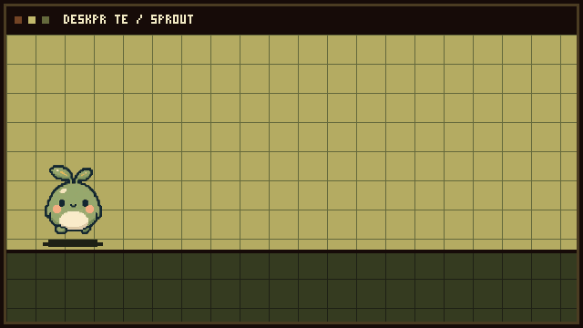

Deskprite
Draw a buddy. Bring it to your desktop. Deskprite is an open-source app by Justin Uurtsaikh. Draw animation frames or import a transparent PNG sprite sheet, then let the character idle and walk across macOS or Windows.
Sproutincluded sprite preset
Move Sprout around
Click inside the preview to move Sprout.

Sprite sheets
Use equal square cells in a transparent PNG. One row can idle and another can walk.
Deskprite also has a frame-by-frame drawing editor.
Setup and sprite guideIdle
Walk
Runs locally
Your sprite files stay on this computer. Deskprite has no account or upload service.
Version 0.3.2. Free and MIT licensed. Built with Electron and JavaScript.
Run Deskprite
Deskprite currently runs from source on macOS 13+ and 64-bit Windows. Download or clone the project, open a terminal in the Deskprite folder, then run:
$ npm install
$ npm run dev